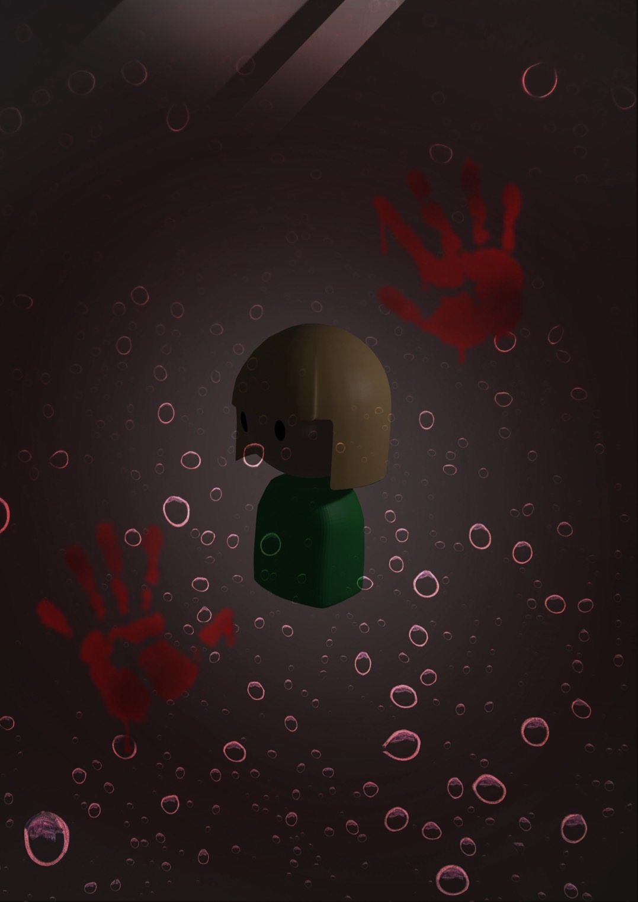

Nia
ボードゲームのルール、ダウンロードでプレイ可能なボードとカードデータを掲載しています
ボード画像リンクはこちら
カード画像リンクはこちら
キャラクター画像リンクはこちら

①表記
イベント(モンスター)マス M
ノーマルマス N
ステータス 攻撃力 ATK
体力 DEF
金 金
②ゲーム開始前準備
サイコロを２つ振り、出た目の和で初期ステータスを設定する。それを3回繰り返し、攻撃力、体力、所持金を決める
モンスターカードと装備カードをそれぞれシャッフルし、裏面が見えるように重ね置きする。
③ゲームの流れ
スタート地点からサイコロを2つ振り、出た目の和分のマスを進む。
装備マス(青緑)に止まった場合、所持金3払い装備カードを1枚引いて装備することができる。買うか買わないか自己判断。
ノーマルマス(灰)は体力が減っていた場合、止まる毎に1回復する。
イベントマス(茶)はモンスターカードを1枚引いてモンスターと戦う。
4隅のマスでは何も起こらない。
注意してほしいルール
・プレイヤーとモンスターの減った体力は次ターン以降も持ち越される。ノーマルマスで回復は可能。
・盤面に出現するモンスターは1体のみ。モンスターが盤面上に1体出現した状態で他プレイヤー、または自分が別のイベントマスにとまった場合、
盤面上に出ているモンスターが死ぬまで同じモンスターを攻撃する。
・モンスターを倒す目処がなく逃げたい場合、もう一度サイコロを振り奇数が出れば無傷でそこから1マス前に進む。進んだマスでは何も出来ない。
偶数が出れば攻撃を喰らって1マス前に進む。進んだマスでは何も出来ない。
・モンスターを倒した場合、他プレイヤーの攻撃に関わらず倒した本人のみレベルアップ
フェーズが切り替わる度に、倒したモンスターも倒してないモンスターも全て集めてシャッフルし直す。
レベルアップする毎にどれか一つステータスを＋5出来る
・モンスターを倒す際、他プレイヤーから装備を借りる事が出来るが、一度借りる毎に金5払う
・スタート地点まで駒を進めればそのフェーズクリア。他プレイヤーがスタート地点まですすめる、又は死ぬまで待っておく。
・ゴールしたプレイヤーは突き当りまでなら逆走して装備購入、戦闘が可能。ただし突き当りまでは強制的に進む必要があり、突き当ったらゴール地点までサイコロを振って戻ってくる。
3フェーズクリアする、もしくは他プレイヤーが全員死んだ状態でそのフェーズをクリアすれば脱出。